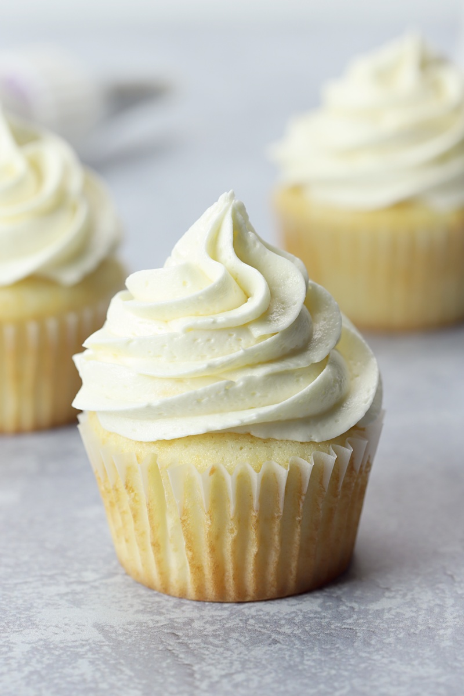

White Cupcakes

Description
These cupcakes are quick to make and are great even without
frosting.
Ingredients
Cake
- 1 cup white sugar
- 1/2 cup unsalted butter
- 2 large eggs
- 2 tsp vanilla extract
- 1 3/4 tsp baking powder
- 1/2 cup milk
Frosting
- 1/2 cup butter
- 8 ounces cream cheese
- 4 cups confectioners' sugar
- 2 tsp vanilla extract
Directions
Cupcakes
- Preheat the oven to 350 degress F.
-
Cream sugar and butter together in a mixing bowl. Add
eggs, one at a time, beating briefly after each addition.
Stir in vanilla.
-
Combine flour and baking powder in a separate bowl. Add
to the wet ingredients and mix well. Add milk and stir
until smooth.
-
Line a 12 cup muffin tin with paper liners and divide
batter evenly among the cups. Bake for 20 to 25 minutes.
Frosting
-
Beat softened butter and cream cheese until well blended
-
Add powdered sugar and vanilla. Beat until creamy.
-
Spread frosting over cupcakes with a knife.
back